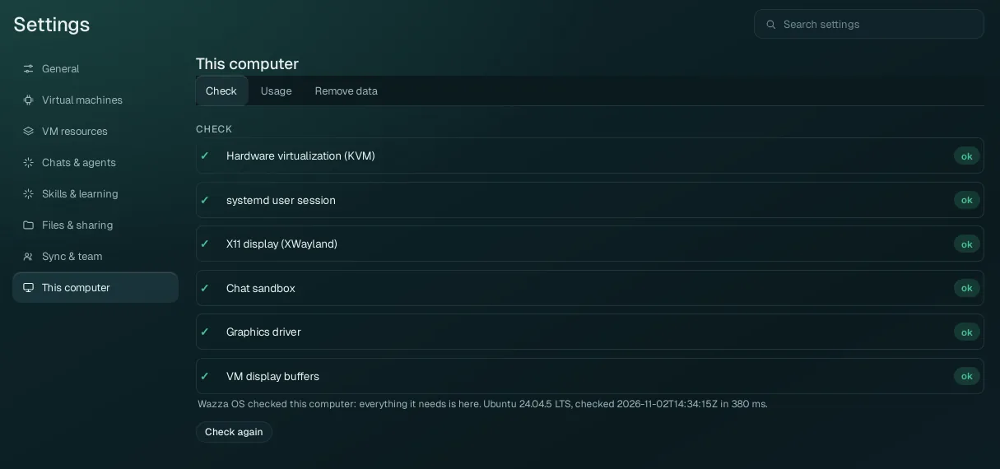
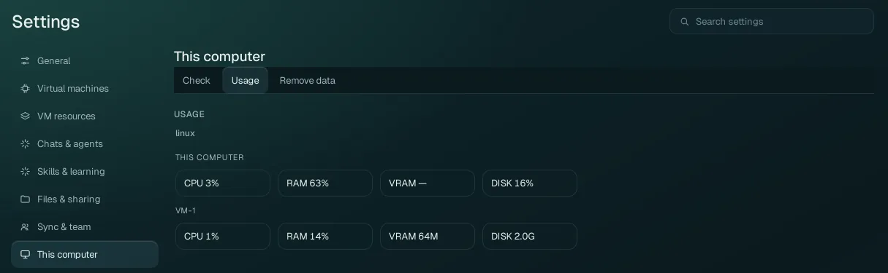
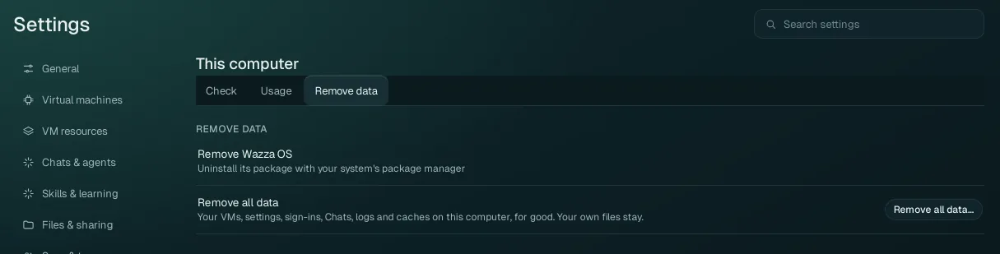

Settings › This computer
What your computer gives Wazza OS, how much of it is used right now, and how to remove Wazza OS's data.
Check#

The same six checks as the first start. A line that is not ok also says what was found, what does not work while it is missing, and its fixes: a command with a Copy button (paste it in a terminal), a step to follow, or a button that opens the Wazza OS setting that fixes it. Check again runs the check now (for example after you fixed something). The line under the list says when it was checked, on which system, and how long it took.
Wazza OS also runs the check once at every start: while something is missing, a notification says what and opens this section.
The fixes for every check: What is checked. In a terminal:
wazza --check (or wazza --check --json); it exits with 1 when something is missing.
Usage#

| Meter | This computer | The VM (the one this window shows) |
|---|---|---|
| CPU | How busy your computer's processors are. | How busy the VM's processors are. |
| RAM | The share of your computer's memory in use. | The share of the VM's memory in use. |
| VRAM | Your graphics card's memory in use (— when it cannot be read). | The VM's video memory. |
| DISK | The share of your disk in use. | The size of the VM's disk now. |
The live VM card at the bottom of the Home menu shows the same for the VM, with its memory limit (The VM card).
Remove data#

Remove Wazza OS#
Wazza OS is removed with your system's package manager: see Install › Remove Wazza OS.
Uninstalling the package (apt remove, dnf remove, pacman -R, the tar's
uninstall.sh) deletes Wazza OS's data on this computer too: your VMs and everything in them, Chats and
sign-ins. To update or reinstall, install the new package over the old one instead: your data is kept.
Remove all data#
Erases all of Wazza OS's data on this computer and starts Wazza OS again as on its very first start, without uninstalling it.
Click Remove all data…. A box opens with what goes (Wazza OS's own folders and their sizes) and what stays.
Type
REMOVE ALL DATAexactly in its field.Click Remove all data and restart (it is grey until the words are typed). Or Cancel.
| Goes, for good | Stays |
|---|---|
| Every VM and everything in it (apps, files you made inside, the VM's settings), every Chat, every sign-in and key, every setting, logs and caches of Wazza OS. | Your own files on your computer (Documents, Downloads, Desktop, your home folder), including what Wazza OS saved there (Downloads/From the VM, backups), and your other apps. |
Wazza OS then closes, removes its data at its next start and starts as on its first start. If it cannot restart by itself, the row says that a removal is waiting, with Cancel the removal (until the next start, the removal can still be cancelled).
Back up a VM you want to keep first (Virtual machines › Backups): the zip is in your Downloads folder, which stays.